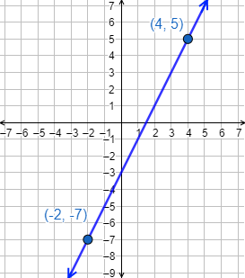

FUNCIÓN LINEAL
Una función lineal es una función polinómica de primer grado. Es decir, tiene la siguiente forma
f(x)= m . x + n
siendo m ≠ 0
𝑚 es la pendiente de la función
𝑛 es la ordenada (en el origen) de la función
La gráfica de una función lineal es siempre una recta.

La pendiente de la función es 𝑚 =2 y la ordenada es 𝑛=−1.
Pendiente y ordenada
La pendiente es el coeficiente de la variable, es decir, 𝑚.
Geométricamente, cuanto mayor es la pendiente, más inclinada es la recta. Es decir, más rápido crece la función.
Si la pendiente es positiva, la función es creciente.
Si la pendiente es negativa, la función es decreciente.
Gráfica
Como una función lineal es una recta, para representar su gráfica sólo tenemos que trazar la recta que une dos de sus puntos. Para ello, calculamos la imagen de dos puntos cualesquiera.
La definición formal de la gráfica de la función es el conjunto de puntos siguiente:
{(x,f(x))}
Ejemplo
Vamos a representar la gráfica de la función
Hacemos una tabla para calcular dos puntos de la gráfica:
| X | 4 | -2 |
| Y | 5 | -7 |
Representamos la recta a partir de los puntos (4,5) y (−2,−7):

VEAMOS EL SIGUIENTE VIDEO